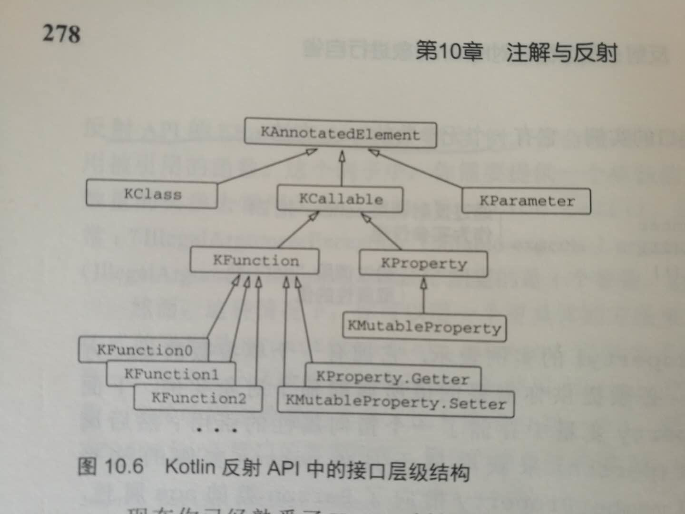

10.1 声明并应用注解
一个注解允许你把额外的元数据关联到一个声明上。
10.1.1 应用注解
@deprecated 函数，kotlin和java一样，但是kotlin用replacewith参数增强了它。
指定注解实参的语法和java有区别：
要把一个类指定为注解实参，在类名后加上::class:@MyAnnatatation（MyClass::class）。
要把另一个注解指定为一个实参，去掉注解前面的@。
要把一个数组指定为一个实参，使用arrayOf函数。
10.1.2 注解目标
使用点目标声明被用来说明要注解的元素。使用点目标被放在@符号和注解名称之间，并用冒号和注解名称隔开，如@get:Rule.其中@get为：使用点目标，Rule为：注解名称。
kotlin允许你对任意的表达式应用注解，而不仅仅是类和函数的声明及类型。
注解@Volatile和@Strictfp直接充当了java的关键字Volatile和Strictfp。
@JvmName将改变由kotlin生成的java方法或字段的名称。
@JvmStatic能被用在对象声明或者伴生对象的方法上，把他们暴露成java的静态方法。
@Jvmoverloads指导kotlin编译器为带默认参数值的函数生成多个重载（函数）。
@JvmField可以应用于一个属性，把这个属性暴露成一个没有访问器的共有java字段。
10.1.3 使用注解定制json序列化
库JKid：从json表示法中取回一个对象，要调用deserialize函数，从对象中得到json字符串serialize函数。
@jsonExclude注解用来标记一个属性，这个属性应该排除在序列化和反序列化之外。
@jsonName注解让你说明代表这个属性的（JSON）键值对之中的键应该是一个给定的字符串，而不是属性的名称。
10.1.4 声明注解
在class关键字之前加上的annation修饰符。因为注解类只是用来定义关联到声明和表达式的元数据的结构，它们不能包含任何代码。因此，编译器禁止为一个注解类指定类主体。
10.1.5 元注解：控制如何处理一个注解
可以在用到注解类上的注解被称为元注解。
10.1.6 使用类注解参数
10.1.7 使用泛型类做注解参数
jkid把非基本数据类型的属性当成嵌套的对象序列化。
@CustomSerializer注解接收一个自定义序列化器类的引用作为实参，这个序列化器应该实现ValueSerializer接口。
10.2 反射：在运行时对kotlin对象进行自省
反射：在运行时动态地访问对象属性和方法的方式，而不需要事先确定这些属性是什么。
kotlin反射API，它能让你能访问那些在java世界里不存在的概念，诸如属性和可空类型。
kotlin反射API被打包成了单独的.jar文件，即kotlin-reflect.jar，如果使用kotlin反射API，需要确保这个库作为依赖被添加（到了项目中）。
10.2.1 Kotlin反射API：KClass、JCallable、KFunction和KProperty
由类所有成员组成的列表是一个KCallable实例的集合，KCallable是函数和属性的超接口。
::foo 语法，是反射API的KFunction类的一个实例。
只能使用反射访问定义在最外层或者类中的属性，而不能访问函数的局部变量。
kotlin反射API中的接口层级结构如下。

10.2.2 用反射实现对象序列化
把一个函数参数转换成一个扩展函数的接受者是kotlin代码中的常见模式。
buildString会创建一个StringBuilder，并让你在lambda中填充它的内容。
10.2.3 用注解定制序列化
KAnnotatedElement接口定义了属性annations，它是一个由应用到源码中元素上的所有注解（具有运行时保留期）的实例组成的集合。
10.2.4 json解析和对象反序列化
jkid中的json反序列化器使用相当普通的方法实现，由三个主要阶段组成：语法分析器、语法分析器或解析器，以及反序列化组件本身。
10.2.5 反序列化的最后一步：CallBy（）和使用反射创建对象
Kcallable.call，不支持默认参数值，Kcallable.CallBy支持。
classInfoCache旨在减少反射操作的开销。